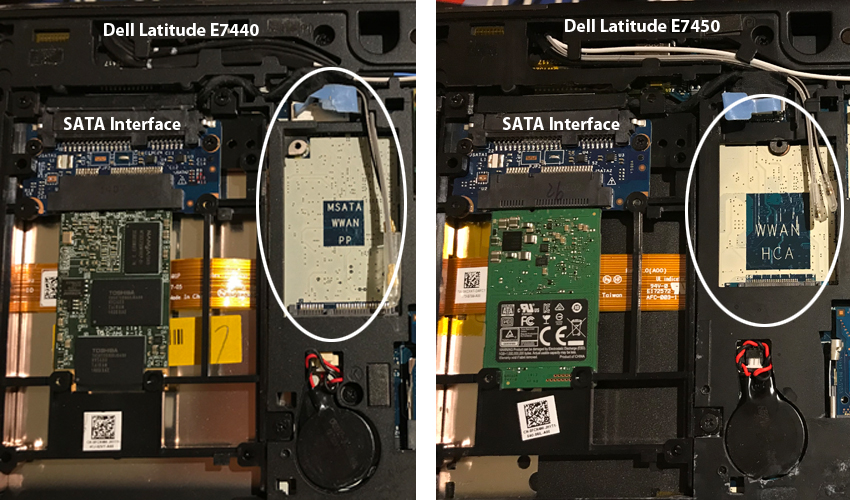
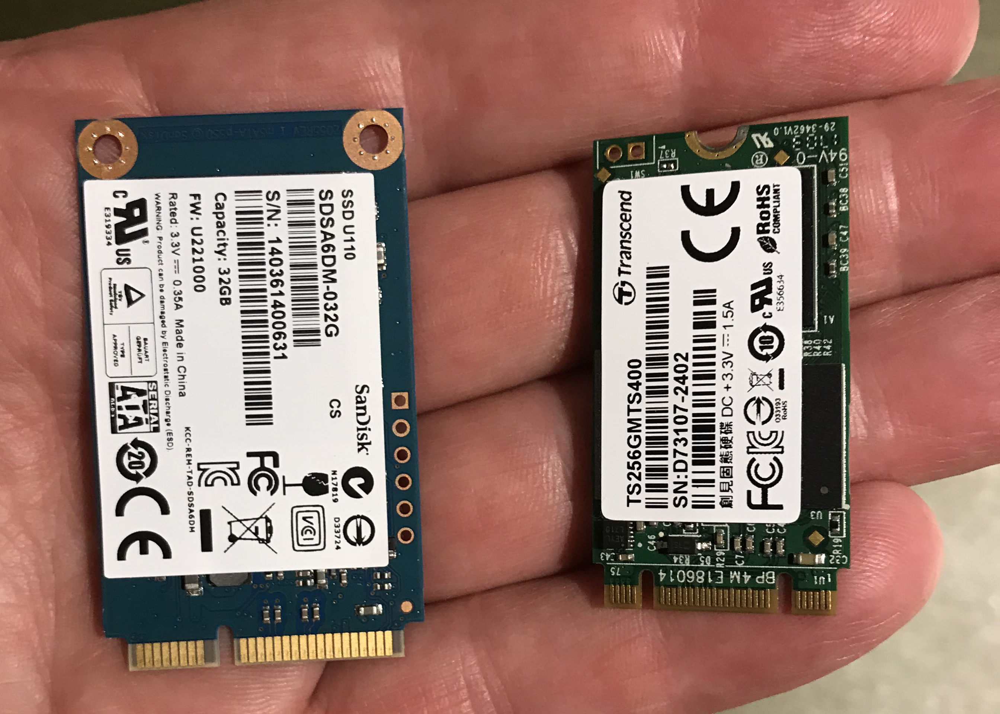
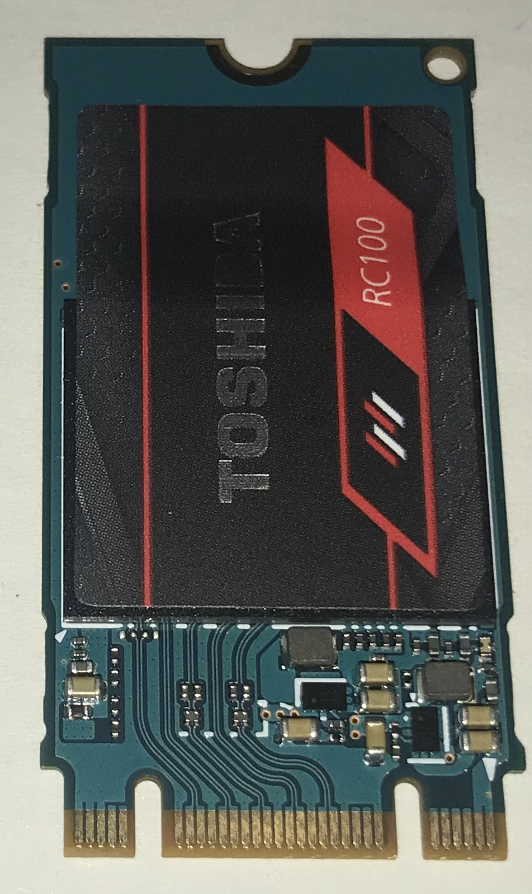
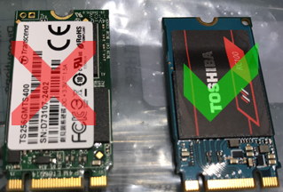
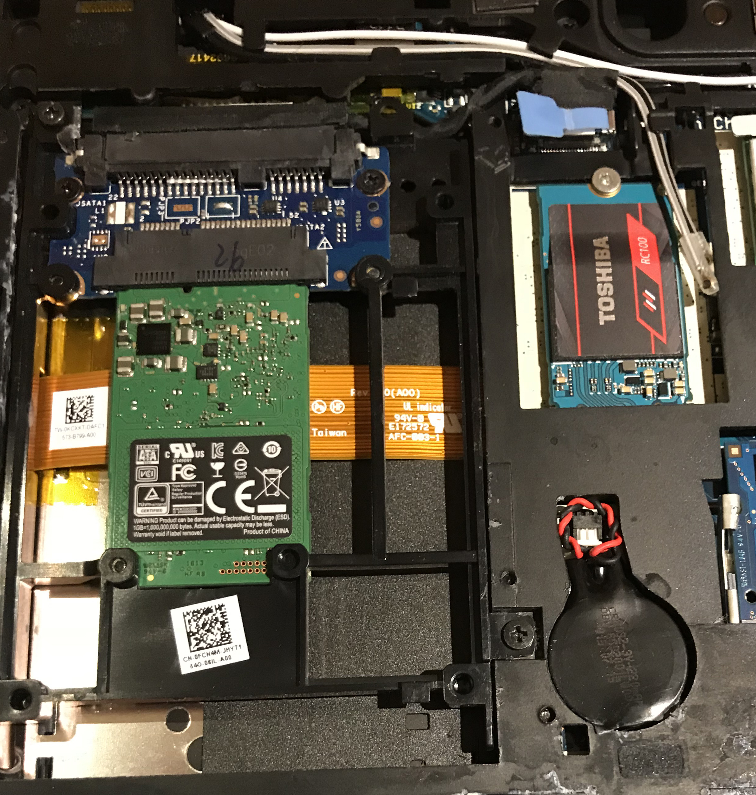
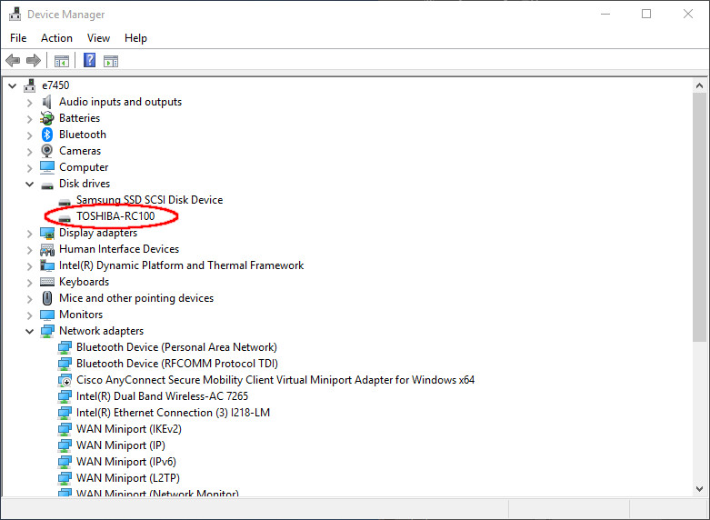

The Changing Landscape of Laptop Solid State Storage
By Jim Connors 30 July 2018
In the hopes that those encountering the
challenge of adding additional SSD storage to modern laptops may
benefit from this learning experience...
Among the more popular standard-issue corporate laptops, the Dell
Latitude E-Series product line has proven to contain a good mix of
the qualities many look for: a reasonably small footprint, powerful
CPU options, full HD graphics and room to expand both RAM and
disk. Of note, I've used a Dell
E7440 laptop for three years and liked it enough that once the
corporate lease was up, I looked to buy a used one for personal
consumption. As the E7440 is a bit long in the tooth now, I
instead opted for the slightly newer, faster version -- the E7450.
At the time of this publishing, these can be had on eBay for about
$350 US.
What at first seemed to be a simple upgrade from the previous
generation turned out to have one rather important difference: there
is no supported secondary storage option on the Dell E7450.

As the image above demonstrates, the Dell E7440 on the left contains
an expansion slot suitable for mSATA
Solid State Drives whereas the connector on the right for the Dell
E7450 instead includes a more generic (and more modern) mini
PCIe slot. Cards for both, although somewhat similar at
first glance, are not the same, do not have the same connectors and
are incompatible. Here's what an mSata card looks like next to
a 42mm mini PCIe card:

The Solution (for the impatient)
Not all mini PCIe cards are alike (more on this later). If
you really don't feel like reading the rest of this article, one
card has finally made it to market that does work in the Dell E7450
mini PCIe slot. That card is the Toshiba RC100 M.2 2242
240GB PCIe SSD, pictured directly below.

Note: The SSD may not automagically appear once installed in,
say a Windows 10 environment. It may need to be partitioned
and formatted first. And of course, as to whether it's
officially supported by Dell is another question entirely.
More on Mini PCIe
Its arguable Dell was ahead of the game with respect to SSD
connectivity for the E7450. The PCIe standard, and in
particular the M.2 connector, is rapidly becoming more and more
common, slowly but surely rendering mSATA obsolete. In
addition to being available in many form factors, M.2 SSDs come with
slightly different edge connectors or keys (which ultimately
determine read/write speed) and can follow the SATA or NVMe
(Non-Volatile Memory express) protocols. Let's examine these
briefly now.
M.2 Form Factors
M.2 cards come in many different widths (12, 16, 22 and 30 mm) and
lengths (16, 26, 30, 38, 42, 60, 80 and 110 mm). Some of these
combinations occur far more regularly than others. The most
common M.2 SSDs use 22 mm width cards with lengths of 30, 42, 60, 80
or 110 mm. A large majority of the M.2 SSDs currently
available prefer the longer length form factors over the shorter
ones, especially when considering larger capacity drives.
Often times the M.2 card will specify the dimensions as part of the
model number. For example, the working module for the Dell
E7450 (mentioned above) is the Toshiba RC100 M.2 2242
240GB PCIe SSD. The highlighted 2242
number indicates this card is 22 mm wide and 42 mm long. This
form factor is not nearly as common as the longer types, and
capacity is currently limited to no more than 256GB. No doubt
as densities improve, this will change. The bottom line here
is, the Dell E7450 PCIe slot is made for a 22 mm wide 42 mm
long M.2 cards. The market for these types of SSDs
are quite limited today.
M.2 Protocol for SSDs
M.2 SSDs are available as either supporting the SATA or the PCIe NVMe
protocols. It is important to understand which of these
protocols your laptop motherboard supports. Unfortunately, I
was unaware of these differences, and in my ignorance initially
purchased a Transcend 256GB SATA III MTS400 42 mm SSD. In the
limited world of 42 mm M.2 SSDs, the SATA variety is by far and away
the most prevalent and in fact until recently was the only
option. Unfortunately the Dell E7450 does not support SATA on
its PCIe interface. The picture that follows includes both
PCIe M.2 SSDs. They both look the same. The Transcend
device on the left won't work; the Toshiba device on the right does.

M.2 Connectors
We won't get into much detail here, suffice it to say the M.2
edge connector can have different keying
and notch configurations signifying among others,
interfaces and transfer speeds. The cards in the image above
are of the "B & M key" edge connector variety.
Conclusion
Here's the Dell Latitude E7450 with the Toshiba SSD installed.

And here's how in appears in the Windows 10 Device Manager
